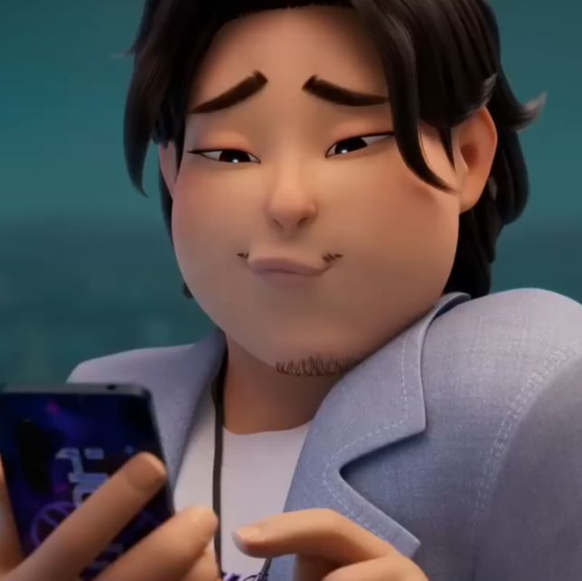
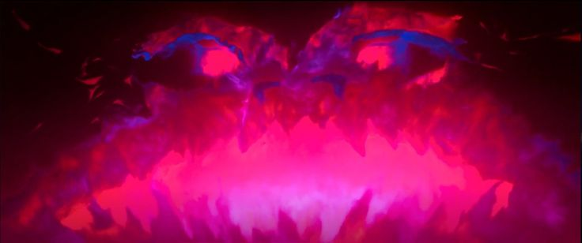

Celine
Celine é uma antiga caçadora e a mãe adotiva de Rumi após a morte de sua mãe biológica, de quem Celine era grande amiga. Apesar de sua aposentadoria do ramo, Celine treinou Rumi e outras duas mulheres para se tornarem a nova geração de caçadoras.
Há muito tempo atrás, Celine se tornou uma caçadora e integrante das Irmãs Solares. Durante seu tempo no grupo, Celine se tornou amiga de Ryu Mi-young. Quando Mi-young esteve morrendo, Celine prometeu que cuidaria de sua filha. Para a surpresa de Celine, entretanto, a criança era metade demônio. Celine, então, decidiu ir contra seus ideais para cuidar da criança e cumprir a promessa feita para sua amiga.
Presume-se que após a morte de Mi-young, Celine se aposentou da vida de idol coreana. Então, ela decidiu focar seus esforços em criar Rumi; prometendo para a criança que suas marcas desapareceriam quando o Honmoon fosse selado.
Bobby

Bobby é o gerente alegre e leal da HUNTR/X, parecendo um pouco trapalhão, mas consistentemente confiável. Ele leva seu papel a sério, supervisionando os horários, as mídias sociais e os desafios do dia a dia do grupo. Embora desconhecendo os aspectos sobrenaturais da vida de HUNTR/X, ele serve como uma fonte consistente de estabilidade e apoio emocional em ambas as carreiras e vidas pessoais.
Apesar das frequentes perturbações nas atividades do grupo, Bobby mantém a calma e a orientação para a solução. Ele evita repreender os membros durante momentos tensos, em vez disso, confiando no humor seco, enquanto gerencia as situações da melhor forma possível. Seu otimismo e comportamento constante permitem que ele permaneça composto, mesmo sob pressão. Como empresário, tem mostrado não guardar rancor de grupos rivais, curtindo a música dos Meninos Saja sem deixar de reconhecê-los como concorrência.
A dedicação de Bobby se estende além da obrigação profissional, já que ele é mostrado para cuidar profundamente de HUNTR/X. Sua relação com os membros é retratada como familiar e confiante; por exemplo, quando ele visita co apartamento deles tarde da noite para discutir o trabalho, sua presença é tratada como rotina. Ele também apoia o grupo de maneiras leves, como participar de suas danças ou usar trajes combinando.
Gwi-Ma

Gwi-Ma é o rei dos demônios e o governante do mundo demoníaco.
Pouco se sabe sobre a história de Gwi-Ma. No entanto, com o decorrer das décadas, ele foi capaz de corromper e transformar inúmeras pessoas em demônios. 400 anos atrás, Gwi-Ma concedeu o desejo de Jinu de fama e fortuna, mas custando abandonar sua família.
As maquinações de Gwi-Ma foram cessadas com o surgimento das caçadoras, um grupo de mulheres que enfrentavam demônios. Usando suas cordas vocais mágicas, elas criaram uma barreira mágica que prendeu Gwi-Ma e seus subordinados no mundo demoníaco.
Com o passar das décadas, Gwi-Ma continuou enviando seus demônios atrás das caçadoras na esperança de matá-las para conseguir escapar de vez, mas seus planos sempre resultavam em fracasso.
Gwi-Ma é manipulador, cruel, sádico, sedento por poder e implacável. Importando-se muito pouco com seus subordinados, ele frequentemente os pune com fúria absoluta por seus fracassos. Gwi-Ma também se diverte manipulando aqueles que buscam poder em troca de ferir ou abandonar aqueles que amam enquanto estão sob sua influência, e prefere se aproveitar de suas inseguranças e falhas mais profundas.